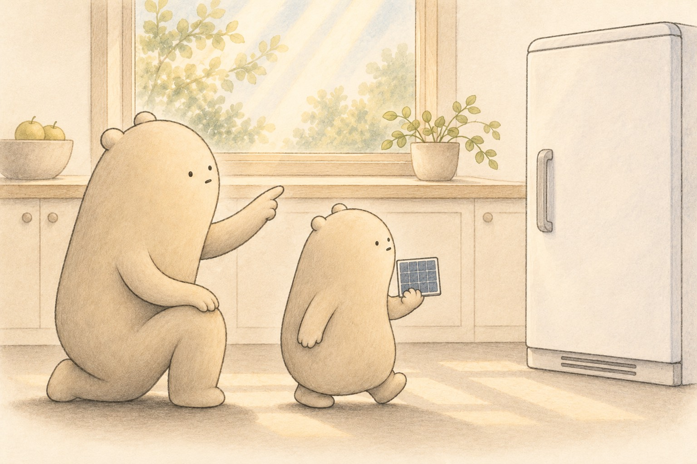

Today’s poem

The Coolest Panel
Little Wonderer found a flat square of blue
with silver-thin stripes running all the way through.
“It’s sleeping,” the little one whispered. “Don’t peep.”
“It’s working,” said Big Wonderer. “Too bright to sleep.”
“The sunshine comes down in small packets of light.
Each knocks an electron loose, left and right.
A one-way slide inside sends it off down the wire,
round the lamp and back home, and it never gets tired.”
“A hot panel,” the big one said, “loses its push.
It works best when it’s cool.” And then, with a whoosh,
the little one hurried away down the hall
to make it the hardest-working panel of all.
It’s frosty in there, and it’s cool as can be,
tucked in with the ice cubes and bags of green peas.
The coldest, best panel that ever was found,
but it’s dark when that door shuts. Not one spark goes round.